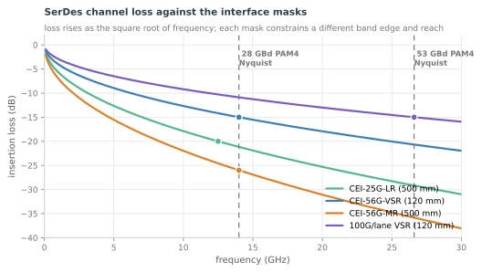
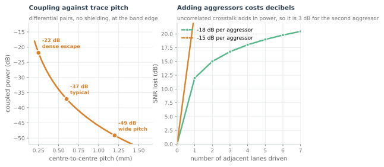
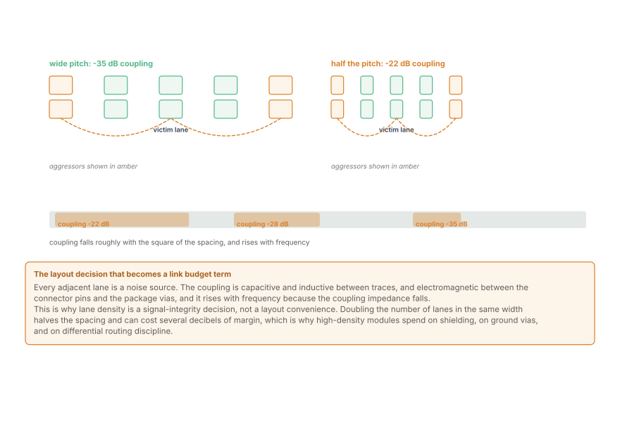
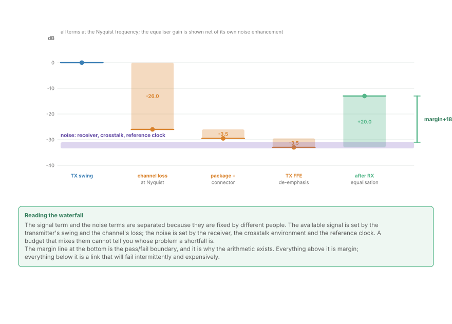
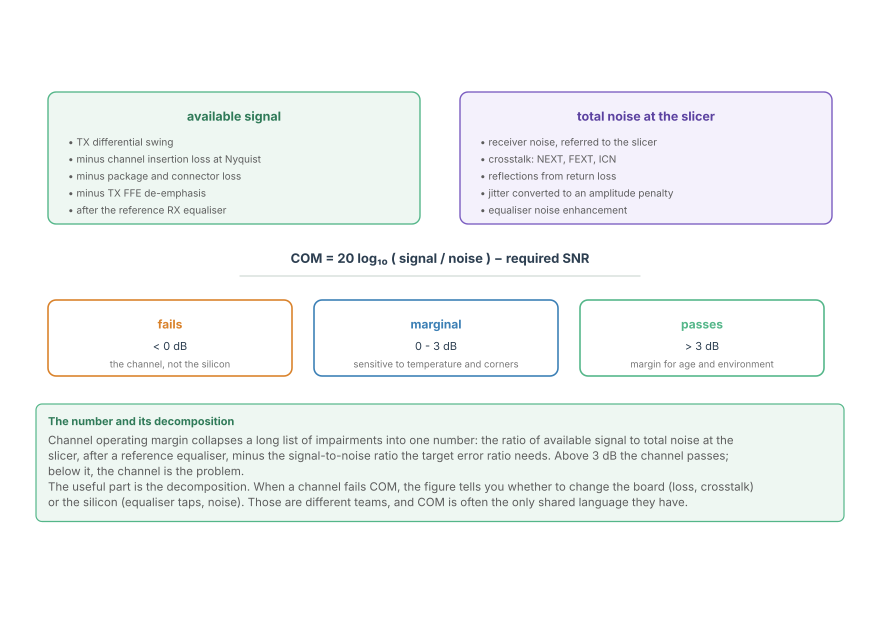

SerDes Channels and the Link Budget
Insertion loss and crosstalk at 26 GHz, how lane density sets the interference, and the channel operating margin arithmetic that replaces a hand-waved budget.
The previous chapter ended with a receiver that has four equalisers and a slicer. Whether that receiver works is decided by a budget, and the budget at SerDes rates has a different shape from the one in the Ethernet part. There, loss dominated and crosstalk was a term. Here they are comparable, and at the highest rates crosstalk is the term that fails first.
This chapter is the arithmetic that decides whether a lane closes, and the two quantities that dominate it.
The channel at 26 GHz

The shape is the same square-root-of-frequency roll-off as a twisted pair, moved up by a factor of fifty. What changes is that the reach is short and the band edge is high, so the loss is dominated by the dielectric and by the connector rather than by the length.
The interface specifications are drawn as curves rather than points because that is what they are. Each one constrains loss as a function of frequency across a stated band, and the two vertical lines are the band edges that matter for the two signalling rates in common use:
- 28 GBd PAM4 has its Nyquist frequency at 14 GHz.
- 53 GBd PAM4 has its Nyquist frequency at 26.6 GHz.
Going from the first to the second nearly doubles the frequency, and therefore costs roughly 3 dB more loss for the same channel. The interface specifications for 100G-per-lane links accommodate this by shortening the reach they guarantee, not by allowing more loss.
Loss is only half the problem
At these frequencies, adjacent lanes couple into each other through the traces, the package vias and the connector pins, and the coupling rises with frequency because the coupling impedance falls.

Two facts from the figure dominate the design:
- Coupling falls with the square of the spacing. Halving the pitch between differential pairs roughly quadruples the coupled power -- 6 dB -- which at these margins is the difference between passing and failing.
- Aggressors add in power. Two uncorrelated interferers cost 3 dB, four cost 6 dB. A lane in the middle of an eight-lane bundle has two immediate neighbours and several distant ones, and the distant ones are not negligible.

This is why high-density modules spend on ground vias, on differential routing discipline and on shielding, and why a layout that "works" at 25G may fail at 100G without a single component changing. Crosstalk has become the first-order effect; loss is the one the mask constrains.
The right-hand panel above is the other half of the argument. Two uncorrelated aggressors cost 3 dB; four cost 6 dB; and a lane in the middle of an eight-lane bundle has two immediate neighbours plus several distant ones. Designing a package is therefore choosing how many aggressors each victim will have, and that choice is made in the layout long before anyone measures a budget.
The right-hand panel above is the other half of the argument. Two uncorrelated aggressors cost 3 dB; four cost 6 dB; and a lane in the middle of an eight-lane bundle has two immediate neighbours plus several distant ones. Designing a package is therefore choosing how many aggressors each victim will have, and that choice is made in the layout long before anyone measures a budget.
The budget
With loss and crosstalk both on the table, the lane's budget is best seen as two columns.

The signal column is the launched swing, reduced by the channel's loss at Nyquist, by the connector and package, and by the transmit FFE's own de-emphasis, then restored -- partly -- by the receive equaliser's gain.
The noise column is everything that competes with it: the receiver's own noise referred to the slicer, crosstalk from every neighbouring aggressor, reflections from imperfect return loss, jitter converted into an amplitude penalty, and the equaliser's own noise enhancement.
Separating them is what makes the budget actionable. The signal column is set by the transmitter, the channel and the equaliser depths. The noise column is set by the receiver, the layout and the reference clock. Those are usually different teams, and a budget that adds them into one number cannot tell you whose problem a shortfall is.
Channel operating margin
The industry's answer to "is this channel good enough?" is a single number, computed identically by everyone who has to agree: channel operating margin, or COM.

COM is the ratio of available signal to total noise at the slicer, after a reference equaliser specified by the standard, minus the signal-to-noise ratio the target error ratio requires. Its units are decibels, and its pass threshold is around 3 dB.
Three properties make it useful:
- It is computed, not measured. COM comes from a channel's S-parameters and a specified transmitter and receiver model. Two vendors can compute the same number from the same board file without meeting.
- It isolates the channel from the silicon. The reference receiver is fixed by the standard, so a COM failure is a channel or layout problem, not an equaliser problem. That is what makes it a shared language between the board team and the chip team.
- It includes crosstalk by construction. The aggressor lanes are part of the computation, which is why COM tracks lane density rather than ignoring it.
Working the arithmetic
Take a 53 GBd PAM4 lane on a 100G-per-lane interface and add it up.
- Signal at the slicer after the reference equaliser: whatever survives the channel. Suppose the channel is at the mask limit, so 15 dB of loss at 26.6 GHz, and the equaliser supplies it.
- Noise: the receiver's own contribution, plus crosstalk from two neighbours at roughly -25 dB each, plus the equaliser's noise enhancement, plus the jitter penalty.
- COM is the difference, in decibels, between the resulting signal-to-noise ratio and what the target error ratio needs.
The interesting number is not the COM itself but its decomposition: whether the shortfall, if there is one, comes from the loss term, the crosstalk term, or the receiver's noise. Those point at three different fixes, and the decomposition is what tells you which.
Where this connects
- Loss and crosstalk are comparable at SerDes frequencies, and crosstalk grows with lane density rather than with reach.
- The band edge follows from baud rate and modulation; a 53 GBd PAM4 lane's problem is at 26.6 GHz.
- The budget separates signal from noise because they are fixed by different parts of the design.
- COM compresses the whole channel into one decibel figure against a fixed reference receiver, which is what makes it a shared language.
- What the budget predicts is an error ratio, and the last chapter of this part is about how the FEC turns it into a passing link.
In the optical link
The channel is a fibre, and its "loss" is nearly flat. A coherent link's dominant impairments are not frequency-dependent attenuation but dispersion, polarisation rotation and nonlinearity -- so its budget looks nothing like the waterfall here. What transfers is the discipline: signal terms and noise terms kept separate, each referred to the decision point, and margin tracked rather than assumed.
Crosstalk has an optical analogue, and it is worse. In a coherent system the neighbouring wavelength is separated by a filter rather than by a ground via, and the residual leakage lands in the same electrical band as the signal. That is why coherent receivers are specified with an adjacent-channel penalty, and why the optical filter shape is a budget term in its own right.
And COM's role is played by OSNR. An optical link is signed off on the optical signal-to-noise ratio at a stated pre-FEC error ratio, computed against a reference receiver and a reference channel. The number is different, the method is identical: fix the receiver model, compute one figure of merit, and agree on a threshold with margin in it.